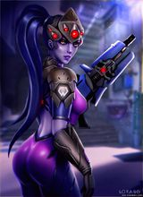
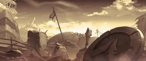
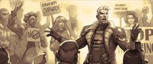

危机由来
21世纪20年代初，人类设计了由人工智能创造的智能机械（简称为智械），其旨在加强生产和创造世界经济繁荣。然而，令人难以置信的事情发生了，智械变得充满恶意，并开始大量生产军用机器人试图毁灭人类。
各国政府未能阻止智能机械的进攻，因此联合国创建了一个国际维和组织，以反抗智能机械。汇集全世界最优秀最精英的组织被命名为“守望先锋”，其将围绕机器人军队展开一场实力不对称的战争。
最初的守望先锋队伍有：来自德国的士兵莱因哈特・威尔海姆，瑞典武器工程师托比昂・林德霍姆，两名美国的强化试验士兵――军中至交好友――加布里埃尔・莱耶斯（死神）和杰克・莫里森（士兵76），廖，以及安娜（法老之鹰的母亲）。
莱耶斯被选为守望先锋的领导者，但其实这个领袖称号实际上有名无实，莫里森磨合了所有人使之成为一个强大战斗力团队。
智械危机持续了很多年，一种自适应海洋型机器人杀害了大量印度人民，肆虐澳大利亚，几近毁灭了西伯利亚和朝鲜半岛。但是尽管无比艰难，守望先锋也取得了一些胜利。
俄国人击败并且关闭了他们的智能中心，韩国派出了电竞职业选手们，包括世界冠军D.Va，他们以新的机甲套装对抗海洋型机器人。危机造成两边的大量伤亡和损失，人类赢得了最终的胜利，这在很大程度上要归功于守望先锋。
在危机被终结后莫里森升任守望先锋指挥官，莱耶斯则负责“暗影守望”――一个潜伏在暗处的秘密行动组织，而且该组织不受官方明文制约。
随着岁月的流逝，守望先锋掌握的资源和能量日益增加，组织招收了更多的成员，并从突击组织转化成一个世界性维和组织，一些有才华的人加入了守望先锋。
成员发展
|  |
守望先锋带领世界进入了一个新的和平纪元，但矛盾依然存在。
在智能危机结束后，一直致力于重建世界的Vishkar公司开始对难民和无家可归的人执行严格的法律和极权主义，在公司内部也有很多人对此颇有微辞。
在里约热内卢，国际DJ卢西奥一夜出名，他带领贫民区人民起义对抗残酷的政策。
在俄罗斯西伯利亚，处于休眠的智械被再次激活，使国家又一次陷入战争，在战争中前者运动员查莉娅成为反抗军中的模范士兵。
在澳大利亚，解放前线组织设法炸毁澳洲智械中心，引起了一场核爆炸几乎毁了内大陆，爆炸后幸存者们自称为拾荒者）。
在法国，守望先锋特工杰拉德・拉克鲁瓦的妻子艾米丽・拉库瓦被改造为潜伏特工和超级刺客，然后杀死了他的丈夫，她被称之为黑百合。 |
团队的覆灭
世界各地情况虽然糟糕，但是最糟糕的是对守望先锋的指控。他们的过失造成了高保密等级任务的失败，腐败和管理不善，武器存储丢失，人权的被侵犯以及“暗影守望”秘密分部被披露。各国政府请求联合国关闭这个“反复损害多个国家主权”的组织。公众不信任的情绪加重，很快曾经的守望先锋英雄们变成了猜疑和仇恨的目标，联合国成立了一个委员会对这些指控进行调查。
委员会的调查最终导致守望先锋的拆解，但在此之前令人震惊的事件发生了。指控主要集中在莱耶斯和莫里森身上，在莫里森升职后，这两人再也没有谈过话，而这次指控调查使得他们的仇隙达到了临界点。
2042年“佩特拉”法令宣布任何形式的守望先锋行为都是非法行动，并且会受到指控。守望先锋在智能危机结束20年后解散了。
守望先锋解散后其成员选择了不同的出路。许多人像麦克雷一样成为了雇佣兵，天使和莱因哈特为继续他们的英雄主义而奋斗，而其他则像温斯顿一样等待英雄们的回归，黑百合仍然活着；路霸和狂鼠在全球范围内作案；岛田犯罪家族仍保留其在日本的力量（尽管家族继承人半藏离开了）；一个温柔的防守堡垒机器人徘徊在世界；杰克・莫里森，现在是一个蒙面卫道士自称士兵：76，从原守望先锋那里偷取了武器用于猎杀阻挡他道路的敌人；莱耶斯成为了可怕杀手死神，并追捕和杀害前守望先锋成员。 |

 |
重新归来